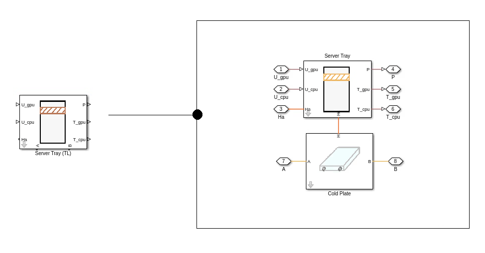

Server Tray (TL)
Contents

This block combines the functionality of the Server Tray block and the Cold Plate block. Thermal Liquid nodes A and B specify the coolant flow through the cold plate. Thermal node Ha specifies the server tray heat transfer to ambient. The input ports U are used to specify the GPU and CPU utilization values. The output port P, Tgpu, and Tcpu specify the electrical power consumption and temperatures of the GPU and CPU chips on the server tray.
GPU
- Number of GPU (-), nGPU, specified as a scalar value.
- GPU TDP per die (W), gpuTDPperDie, specified as a scalar value.
- GPU idle power (W), gpuIdlePower, specified as a scalar value.
- HBM power per GPU (W), gpuHBMpower, specified as a scalar value.
- GPU power utilization exponent (-), gpuExponent, specified as a scalar value.
- HBM utilization as fraction of compute utilization (-), gpuHBMutil, specified as a scalar value.
- Leakage increase per K above nominal temperature (W/K), gpuLeakage, specified as a scalar value.
- Nominal die temperature at TDP (K), gpuNominalDieT, specified as a scalar value.
- GPU die thermal capacitance (J/K), gpuDieThermalC, specified as a scalar value.
- GPU die-heat-sink thermal resistance (K/W), gpuHeatSinkR, specified as a scalar value.
- Surface area per die for ambient heat transfer (m^2), gpuSurfArea, specified as a scalar value.
- GPU die-ambient thermal resistance (K/W), gpuAmbientR, specified as a scalar value.
CPU
- Number of CPU (-), nCPU, specified as a scalar value.
- CPU TDP per socket (W), cpuTDPperSocket, specified as a scalar value.
- CPU idle power per socket (W), cpuIdlePower, specified as a scalar value.
- CPU power utilization exponent (-), cpuExponent, specified as a scalar value.
- Leakage increase per K above nominal temperature (W/K), cpuLeakage, specified as a scalar value.
- Nominal die temperature at TDP (K), cpuNominalDieT, specified as a scalar value.
- CPU die thermal capacitance (J/K), cpuDieThermalC, specified as a scalar value.
- CPU die-heat-sink thermal resistance (K/W), cpuHeatSinkR, specified as a scalar value.
- Surface area per die for ambient heat transfer (m^2), cpuSurfArea, specified as a scalar value.
- CPU die-ambient thermal resistance (K/W), cpuAmbientR, specified as a scalar value.
IT Tray
- Tray mass (kg), trayMass, specified as a scalar value.
- Tray specific heat capacity (J/kg*K), trayCp, specified as a scalar value.
- Tray to external thermal resistance (K/W), trayThermalR, specified as a scalar value.
- Cold plate pipe length (m), pipeLen, specified as a scalar value.
- Cold plate pipe cross-sectional area (m^2), pipeArea, specified as a scalar value.
- Cold plate pipe hydraulic diameter (m), pipeDia, specified as a scalar value.
- Cold plate pipe aggregate equivalent length of local resistances (m), pipeLenXtra, specified as a scalar value.
- Tray to cold plate thermal resistance (K/W), thermalKtc, specified as a scalar value.
Initial Conditions
- Initial temperature (K), initialT, specified as a scalar value.
- Initial pressure (MPa), initialP, specified as a scalar value.
- Heat transfer coefficient to ambient (W/m^2.K), htc, specified as a scalar value.